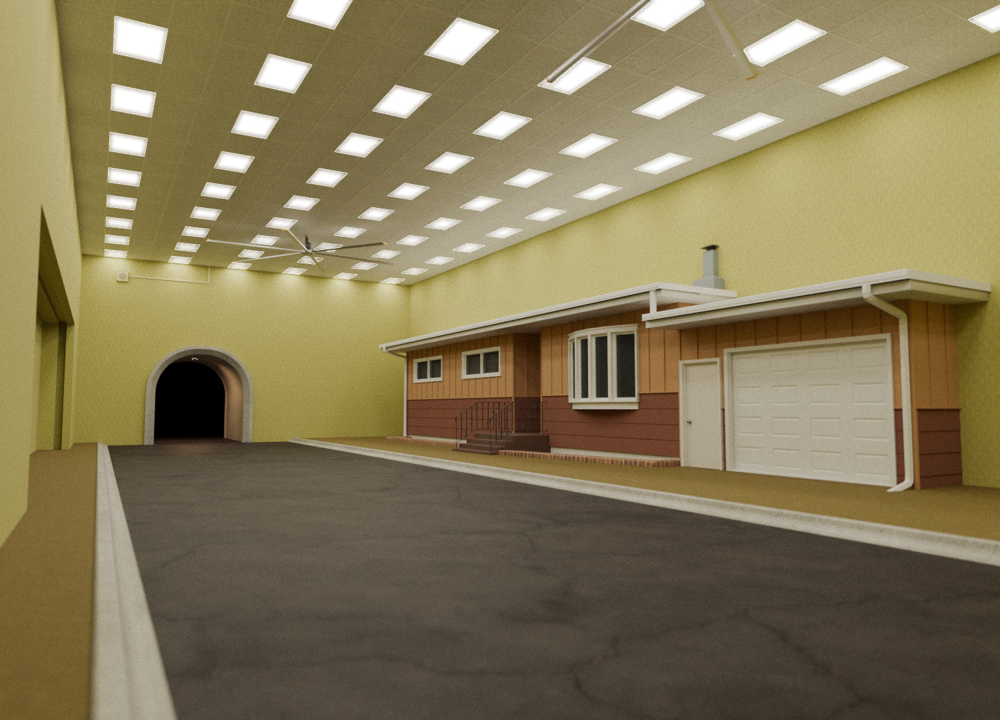

Basement Windfarm
This is a Blender render of a surrealist lanscape where a basement opens up into an endless windfarm. This is from an upcoming short film that explores nostalgia and childhood memories.
This is a Blender render of a surrealist lanscape where a basement opens up into an endless windfarm. This is from an upcoming short film that explores nostalgia and childhood memories.

This is a Blender render of the classic "Black Lodge" found in the TV show Twin Peaks (1990). Im a huge fan of the show, and the liminal style of the Black Lodge really speaks to my artistic style.

This is a Blender render of my current and childhood home replicated within the Backrooms mythos. This is also found in my short film "Liminal Byways" found on Youtube. I love the convepts within the Kane Parsons Backrooms mythos and wanted to integrate something personal into my depiction of the complex.

This is a Blender render of a fictional castle. I was inspired by imagry from games like Silent Hill, and Resident Evil 4&8. This was my first attempt at large landscapes as well.